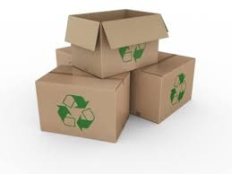
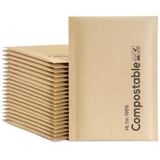
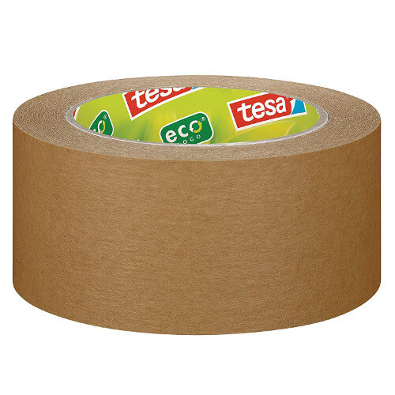
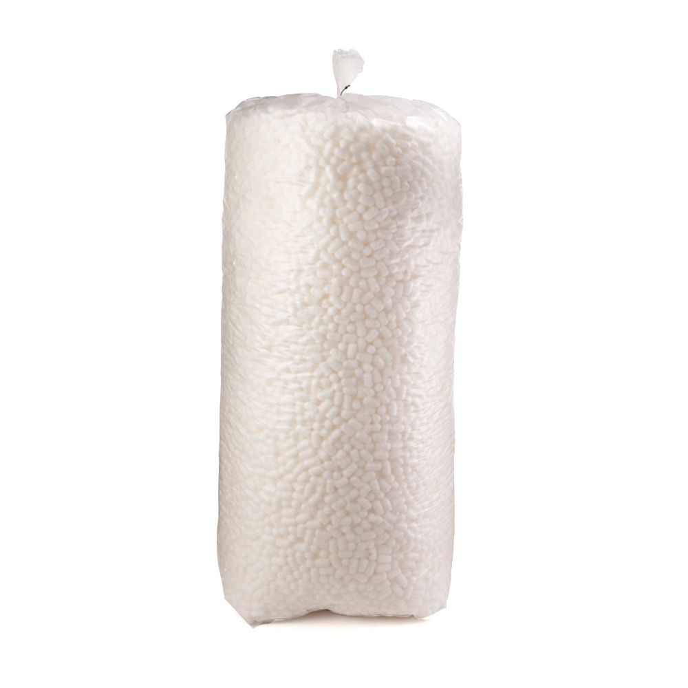
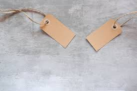

Un programa ecológico es un conjunto de acciones planificadas y organizadas que tienen como objetivo proteger el medio ambiente, reducir el impacto ambiental de una actividad o sector, y promover la sostenibilidad.
reducir emisiones, reciclar, ahorrar energía
Dirigir campañas de reciclaje, uso de energías renovables, reforestación,
Cajas de cartón reciclado o reciclable
Sobres compostables o biodegradables:Hechos con almidón de maíz, papel reciclado, o materiales vegetales.
Cinta adhesiva ecológica :Hecha de papel kraft y adhesivo natural (sin plástico).
Relleno ecológico: Chips de almidón de maíz (biodegradables).
Etiquetas y tintas sostenibles: Etiquetas hechas con papel reciclado. Tintas vegetales o base agua.
Facturación electrónica
Vehículos eléctricos
Iluminación LED y energía renovable:Uso de fuentes de energía limpia en las instalaciones.